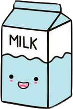

La colazione nonchè primo pasto giornaliero, dice tutto di noi, delle nostre usanze, tradizioni e sopratutto differisce di cultura in cultura
Pertanto andremo ad esaminare le diverse colazioni nel mondo, dolci e salate, per evidenziarne e sopratutto eloggiarne le differenze

colazione dolce
La colazione italiana è considerata la più ricca e sopratutto la migliore secondo il parere di numerosi nutrizionisti, poichè spazia dalla frutta ai cereali.
La colazione russa predilige anche il dolce, infatti sono soliti mangiare focaccine fritte in padella con la panna acida, miele, marmellata oppure con frutti di bosco freschi.
La colazione francese è molto simile a quella italiana. Il dolce è all’ordine del giorno, nelle tavole francesi non può mancare la marmellata